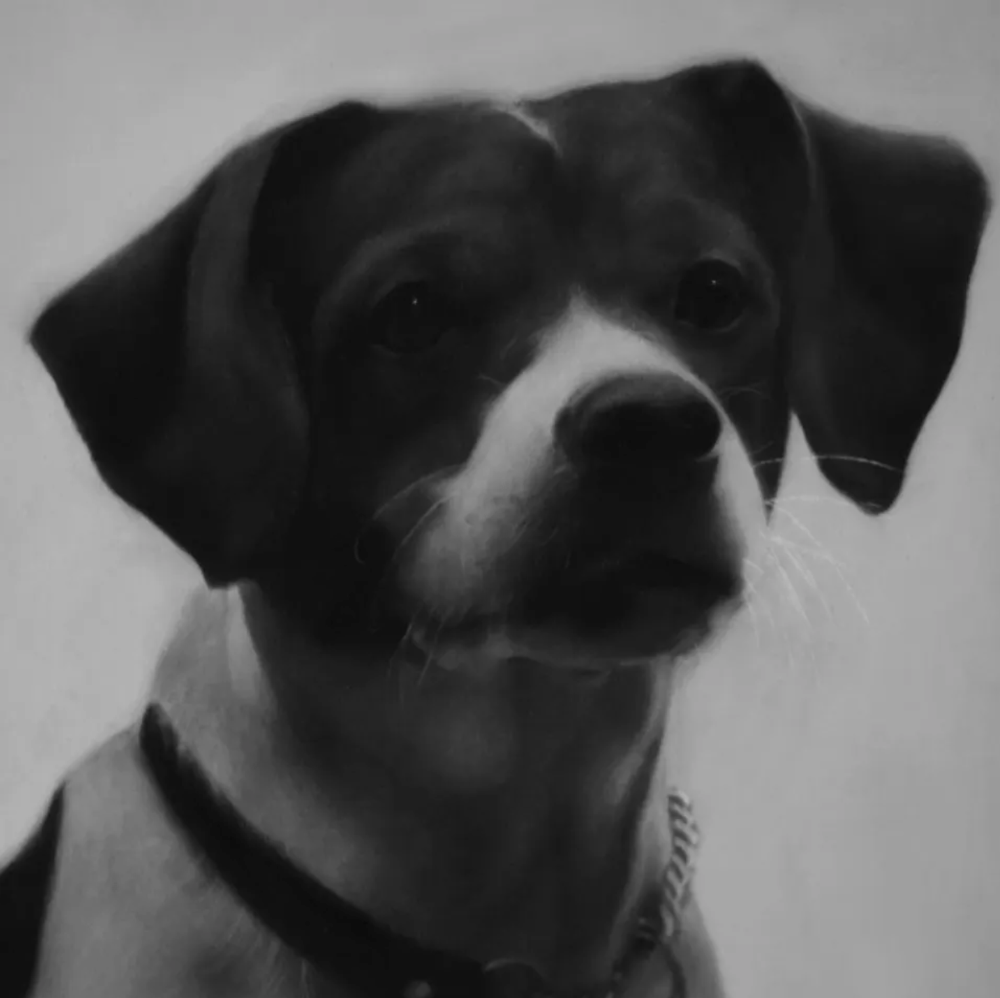
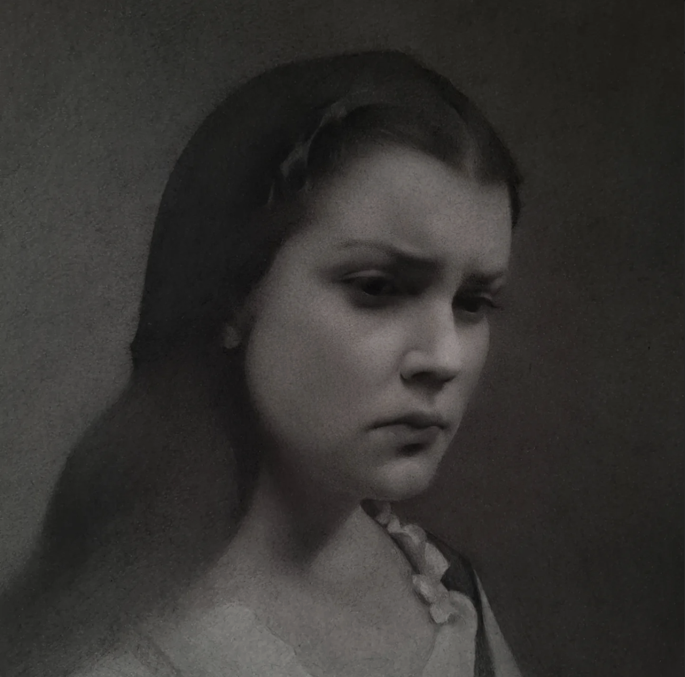

Min hobby
Som tidigare närmnt håller jag på med lite diverse saker på min framtid, men min största hobby är att teckna. Mestadels av tiden jobbar jag i kol, men även mycket blyerts och nyligen även oljemålning, även om det kan få mig att svära som en sjöman vid tillfälle osv osv.


| Material | Svårighetsgrad | Kostnad | Min erfarenhet |
|---|---|---|---|
| Kol | Lätt | Billigt | Stor |
| Blyerts | Lätt | Billigt | Mycket stor |
| Olja | Mycket svårt | Dyrt | Medel |
| Akvarell | Svårt | Relatvit billigt | Liten |
| Av Sara | |||
Läs mer om min största inspiration här